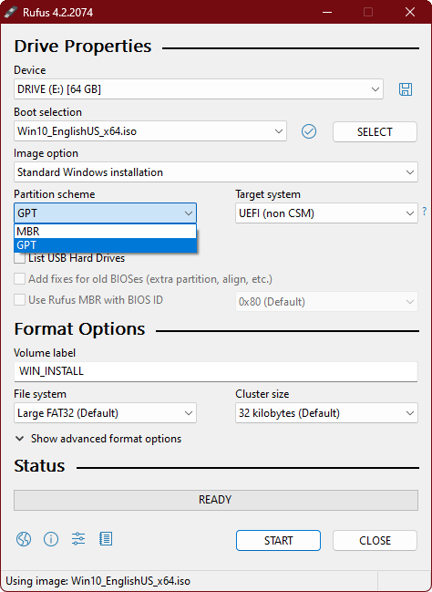

Physical Hardware Steps
1. Download the ISO File and Rufus
2. Look to the right and click on "SELECT" and browse to the ISO.
3. Make sure to click "MBR" for BIOS, or "GPT" for UEFI, to find this, press Win + R and type in "msinfo32.exe", press Enter.
Now, check for "BIOS Mode" and to the right, you will see your boot firmware. Check here if you're having trouble.
4. If you're using a USB HDD, click the "List USB Hard Drives" check box.
5. Make sure you have the right drive selected, and click the "START" button.
6. Now, after that is finished, find your boot menu key (a lot of times is F12.
7. Spam that key during boot, then select your USB Drive.
8. Now, install Windows as you normally would, and boom! You now have Windows Mittens.
(!!!You should get network drivers on a secondary machine if network does not work!!!)
Virtual Machine Steps
1. Create a new virtual machine.
2. Import the ISO/Set as Disk image, instructions below:
Virtual Box, Click here
VMware (Windows/Linux) Click here
VMware (Mac), Click here
3. Now, boot up the VM, and boot off of the DVD ROM.
4. Install Windows as you normally would, and boom! Windows Mittens is now installed in your VM!